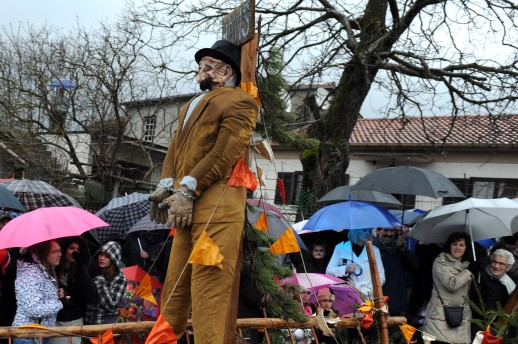

Tajanstveni Hans bit će odgovoran za sve nedaće i "huncutarije" koje se budu događale tijekom "najluđeg godišnjeg doba", a koje će ove godine trajati sve do 8. ožujka, odnosno nekih devet tjedana, što je maksimum koliko pust može trajati
Žejane - Šarenilo kišobrana u rukama mnogobrojnih ljubitelja karnevala koji su usprkos lošem vremenu pristigli u gotovo nezapamćeno velikom broju obilježilo je početak pusta u Žejanama, gdje je uz zvonjavu zvončara te u pratnji harmonikaša u centru mjesta podignut prvi ovogodišnji pust.

Tajanstveni Hans bit će odgovoran za sve nedaće i "huncutarije" koje se budu događale tijekom "najluđeg godišnjeg doba", a koje će ove godine trajati sve do 8. ožujka, odnosno nekih devet tjedana, što je maksimum koliko pust može trajati.
No, čini se kako se ovaj podatak i nije previše "ulovio uha" brojnim ljubiteljima karnevala koji su jučer pristigli u Žejane s očitom namjerom da se neće štedjeti od prve sekunde, a poznavajući stanovnike Općine Matulji, "najpusne općine na svijetu", ne treba brinuti kako će pusnim "zagrižencima" prifaliti "goriva" za karnevalske ludorije.
Na feštu u Žejanama osim domaćina te stanovnika Matulja pristigao je i iznenađujući broj ljubitelja pusnih običaja s područja cijele Liburnije te šire okolice, a u programu su sudjelovali i Labinjanska kumpanija – domaća folšarija, društvo iz Kršana te karnevalske udruge iz Primorsko – goranske županije.
Pod okriljem noći, točno u ponoć na blagdan Sveta tri kralja, zaogrnuti rijetkim pahuljicama snijega, selo su svojom zvonjavom prvi probudili žejanski zvončari, označivši kraj božićnih blagdana te najavljujući pusno "ludilo".
U ovom drevnom običaju kada zvončari u civilu svojom zvonjavom na Sveta tri kralja bude svoje mjesto, praveći tri kruga oko centra (za svakog kralja po jedan), Žejancima su se 24 sata kasnije pridružili i zvončari iz susjednih Muna, gdje je također na "pal" ispred Društvenog doma podignut pust.
Svečana ceremonija kada će maškare i službeno preuzeti "ključeve" Općine Matulji bit, će kao i svake godine, održana 17. siječnja, na blagdan zimske Antonje, kada mještani Zvoneće slave svoga sveca zaštitnika.
Poznati "antonjski rog" tulit će sve do 8. ožujka, kada ove godine pada Pusni utorak, dan prije Pepelnice, što će svakako razveseliti mnogobrojne karnevalske "zagrižence" i ljubitelje "petog godišnjeg doba".
Marino Maljavac
January 6, 2011
© 2011 Novi List